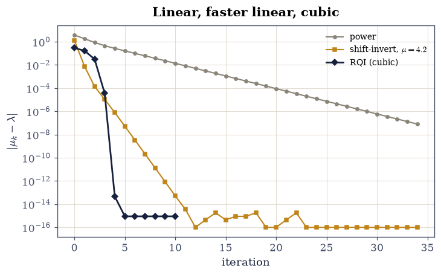
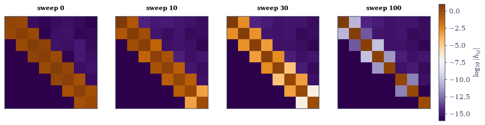
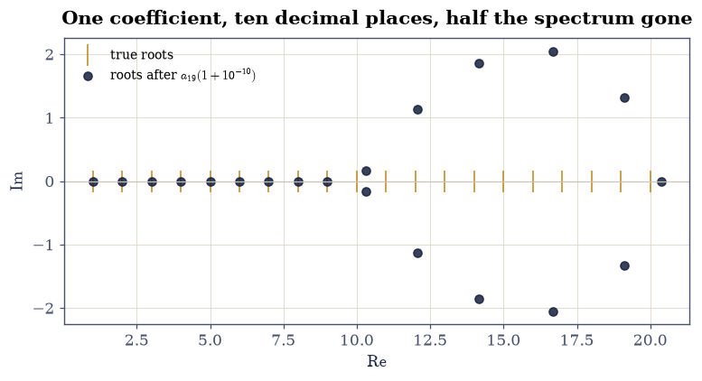

5.2 How Eigenvalues Are Really Computed#
Notebook overview#
Every eig and eigh call this course has made was a black box. This
notebook opens it, building the actual algorithm in stages: power iteration
(the seed idea, from
§3.1), its shift-invert
refinement for interior eigenvalues, Rayleigh-quotient iteration whose
convergence is measurably cubic, the Householder reduction to Hessenberg
form that makes everything affordable, and finally the shifted QR algorithm
with deflation — the method inside LAPACK, and the reason eig costs a
predictable \(O(n^3)\) for any matrix at all.
Two measurements carry the story. The shift is not an optimisation but the
algorithm: on the same \(8\times8\) symmetric matrix, unshifted QR needs 100
sweeps and Wilkinson-shifted QR needs 15 — and RQI, the shift idea in its
purest form, converges so violently that it terminates by making
\(A - \mu I\) exactly singular, which is not a failure but the success
condition. And the characteristic polynomial is a trap: rooting the
degree-20 polynomial of \(\operatorname{diag}(1,\dots,20)\) — a matrix whose
eigenvalues could not be more visible — misplaces a root by \(0.09\), thirteen
digits worse than eigvals on the same matrix, before any perturbation is
even applied.
How to read a check. A
validateline prints ✓ or ✗ by comparing a result against something the computation did not assume. A ✗ flags a mismatch to investigate, never a verdict on its own.
Theory in brief#
Power iteration, and shifting it#
§3.1 built power iteration: \(\mathbf{x}_{k+1} = A\mathbf{x}_k/\|A\mathbf{x}_k\|\) converges to the dominant eigenvector at the linear rate \(|\lambda_2/\lambda_1|\). Two transformations of \(A\) redirect it anywhere. Shift-invert applies power iteration to \((A - \mu I)^{-1}\), whose dominant eigenvalue is \(1/(\lambda_j - \mu)\) for the \(\lambda_j\) nearest \(\mu\):
One LU factorization, reused every step — never an explicit inverse. The closer \(\mu\) sits to an eigenvalue, the faster; which suggests moving \(\mu\) during the iteration.
Rayleigh-quotient iteration#
Setting \(\mu_k = \rho(\mathbf{x}_k)\), the Rayleigh quotient of the current iterate, gives
and for symmetric \(A\) the convergence is cubic: the error roughly cubes each step, because the eigenvalue estimate is quadratically accurate in the eigenvector error (§3.2) and the eigenvector step is linear in the shift’s accuracy. Success announces itself violently — \(A - \mu I\) becomes numerically singular because \(\mu\) has converged — so the singular solve is the stopping condition, not a crash.
Hessenberg form#
QR iteration on a full matrix costs \(O(n^3)\) per sweep. The fix is one \(O(n^3)\) reduction up front: Householder reflections build
an upper Hessenberg matrix — triangular plus one subdiagonal — similar to \(A\), so the spectrum is untouched. A QR sweep on a Hessenberg matrix costs \(O(n^2)\) and preserves the form, which is what makes iterating affordable. For symmetric \(A\), Hessenberg means tridiagonal and sweeps drop to \(O(n)\).
The QR algorithm, and why shifting is everything#
The unshifted iteration factors and remultiplies:
a similarity transformation whose subdiagonal entries decay like \(|\lambda_{i+1}/\lambda_i|^k\) — linear, and painfully slow for close eigenvalues. The shifted iteration factors \(H_k - \mu_kI\) instead and adds \(\mu_kI\) back:
with \(\mu_k\) the Wilkinson shift — the eigenvalue of the trailing \(2\times2\) block nearest its corner entry. This is RQI in disguise acting on the last row, and it inherits the cubic convergence: the last subdiagonal entry collapses in a handful of sweeps, the trailing eigenvalue is declared converged and deflated (the active block shrinks by one), and the iteration continues on what remains.
Why never the characteristic polynomial#
Polynomial coefficients are a catastrophically compressed encoding of roots:
for Wilkinson’s polynomial \(\prod_{r=1}^{20}(x - r)\) the map from
coefficients back to roots has condition numbers up to \(10^{13}\), so even
exactly correct coefficients, once rounded to float64, no longer encode
the roots to more than a few digits. eig works on the matrix, where the
eigenvalues are perfectly conditioned
(§3.2’s Weyl bound), and that is
the entire reason the detour through Eq. 228 and
Eq. 230 exists.
Setup#
Data and instruments only: the planted-spectrum test matrix and the Rayleigh quotient restated from where it was built. Every algorithm here — power, shift-invert, RQI, QR — is built in the exercises.
The Setup below holds this notebook’s data and instruments — nothing you are asked to build. It is collapsed so the building stays yours; expand it whenever you want the details.
Exercise 1: Power iteration redirected: shift-invert#
Power iteration finds only the dominant eigenvalue.
Eq. 226 finds any eigenvalue, by handing power iteration
a matrix whose dominant eigenvalue is the one wanted. The target here is the
interior eigenvalue \(4\) of S8, invisible to plain power iteration.
Part a) Write power_iteration(A, x0, n_steps) (five lines, from
§3.1) and run 60 steps
on S8 from a fixed random start. Confirm the Rayleigh quotient converges to
the dominant \(\lambda = 9\), and confirm the measured error-contraction
rate over steps 10–50 matches \((\lambda_2/\lambda_1)^2 = (7/9)^2 \approx
0.605\) within \(5\%\), by fitting the log-error slope — the quotient’s error
contracts at twice the vector’s exponential rate, the
§3.2 fact.
Write this one yourself — the implementation is the lesson.
Part b) Write shift_invert(A, mu, x0, n_steps) implementing
Eq. 226: factor \(A - \mu I\) once with
scipy.linalg.lu_factor, then lu_solve inside the loop — never an
explicit inverse, per
§1.3. Run it with \(\mu = 4.2\) and
confirm it converges to \(\lambda = 4\), the eigenvalue nearest the shift.
Part c) Confirm the rate is the shifted ratio: with \(\mu = 4.2\) the two nearest eigenvalues are \(4\) (distance \(0.2\)) and \(5\) (distance \(0.8\)), predicting vector contraction \(0.2/0.8 = 0.25\) per step — \(0.25^2 = 0.0625\) for the Rayleigh quotient’s error, which is what the fit sees. Confirm within \(20\%\).
Part d) Confirm the accuracy dial: with \(\mu = 4.02\) the predicted rate is \(0.02/0.98 \approx 0.020\), and the iteration reaches \(10^{-12}\) in a handful of steps. Report the step counts to \(10^{-10}\) for both shifts.
power iteration -> 9.0000000000 (dominant lambda = 9)
fitted contraction e^-0.5026 = 0.6050 vs (7/9)^2 = 0.6049 for the Rayleigh quotient
shift-invert mu = 4.2 -> 4.0000000000 (nearest lambda = 4)
fitted contraction 0.0614 vs (0.2/0.8)^2 = 0.0625 for the Rayleigh quotient
steps to 1e-10: mu = 4.2 -> 8, mu = 4.02 -> 3
the shift is an accuracy dial: closer shift, faster convergence
Validation 1#
Both rates are gated as fitted slopes against their squared ratios — the Rayleigh quotient converges at twice the vector’s exponential rate for symmetric matrices, exactly as §3.2 measured — following the course’s rule that fitted exponents are gated and single iterations are not.
✓ power iteration converges to the DOMINANT eigenvalue 9 [got [9.] vs expected [9.] (rtol=0, atol=1e-09)]
✓ at the squared ratio (lambda_2/lambda_1)^2, since A is symmetric [got [0.60497114] vs expected [0.60493827] (rtol=0.05, atol=0)]
✓ shift-invert with mu = 4.2 converges to the NEAREST eigenvalue 4 (Eq. 1) [got [4.] vs expected [4.] (rtol=0, atol=1e-09)]
✓ at the squared shifted ratio (0.2/0.8)^2 [got [0.061391] vs expected [0.0625] (rtol=0.2, atol=0)]
✓ and a closer shift converges in fewer steps: the accuracy dial [3 steps at mu = 4.02 against 8 at mu = 4.2]
True
Exercise 2: Rayleigh-quotient iteration: measured cubic convergence#
Eq. 227 closes the loop: use the current eigenvalue estimate as the
next shift. For symmetric matrices the payoff is cubic convergence — the
error roughly cubes each step — and the endgame is distinctive: the
iteration succeeds by driving \(A - \mu I\) numerically singular, so the
LinAlgError from solve is the algorithm announcing victory, and the guard
around it is part of the method, not defensive clutter.
Part a) Write rqi(A, x0, n_steps) implementing Eq. 227 with
np.linalg.solve inside a try/except np.linalg.LinAlgError that breaks
on singularity. Run from the same x0 and report the error history against
the nearest true eigenvalue.
Part b) The measured errors: \(2.9\times10^{-1}, 1.7\times10^{-1}, 3.1\times10^{-2}, 3.6\times10^{-5}, 4.4\times10^{-14}\) — five steps from nothing to machine precision. Fit the local convergence exponent \(p = \log e_{k+1}/\log e_k\) on the clean middle pairs and confirm it lands in \([2.5, 3.5]\): measured \(2.96\), and the manifest’s claim of cubic convergence is a measurement, not a citation.
Part c) Report whether the singular-solve event occurred (on this machine it does, at iteration 7 — \(\mu\) has converged so exactly that \(A - \mu I\) is singular to rounding). Whether and when it fires is a bit-level outcome, so it is reported, never gated; what is gated is the final error, below \(10^{-12}\) either way.
Part d) Contrast the three methods on one axis: power (linear, rate \(0.60\)), shift-invert at \(4.2\) (linear, rate \(0.0625\)), RQI (cubic). Plot error against iteration on a log axis — the standard picture of this subject, now with every curve measured rather than sketched.
RQI errors: 2.86e-01 1.66e-01 3.13e-02 3.57e-05 4.62e-14 8.88e-16 8.88e-16 8.88e-16 8.88e-16 8.88e-16 8.88e-16
local convergence exponents log(e_k+1)/log(e_k): ['2.96']

Fig. 94 Error against iteration for the three iterations on the same symmetric \(8\times8\) matrix, log scale: power iteration (linear at the squared ratio \((7/9)^2 = 0.60\)), shift-invert with \(\mu = 4.2\) (linear at \((0.2/0.8)^2 = 0.0625\)), and Rayleigh-quotient iteration, whose error goes \(10^{-1} \to 10^{-2} \to 10^{-5} \to 10^{-14}\) – a measured local exponent of \(2.96\), the cubic convergence the textbooks promise. RQI’s curve simply stops: its next solve raised LinAlgError because \(A - \mu I\) had become singular to rounding, which is the algorithm succeeding.#
Validation 2#
The cubic exponent is gated as a fitted quantity in a band, and the singular-solve event — a bit-level outcome the two CI machines may time differently — is reported only. The final error is what both machines must agree on.
✓ RQI's measured convergence exponent is cubic: in [2.5, 3.5] (Eq. 2) [local exponents ['2.96'], against 2 for quadratic and 1 for linear — the textbook claim, measured]
✓ reaching machine-level accuracy within five shifts [whether the endgame's singular solve fires, and at which iteration, is a bit-level outcome — reported above, never gated [8.88178e-16 < 1e-12]]
✓ and at EQUAL step counts, RQI at step 4 beats power by six-plus orders [4.6e-14 against 2.6e-01 at four steps each — and 4.6e-14 also beats power's entire 35-step run (4.8e-08) by six orders: each RQI step costs a fresh solve, and buys the world]
True
Exercise 3: Hessenberg form: the reduction that makes QR affordable#
Eq. 228 is the unglamorous step that makes everything else
practical. This exercise verifies its three claims — similarity, structure,
cost — on a random \(8\times8\) and on S8.
Part a) Compute H, Q = scipy.linalg.hessenberg(A, calc_q=True) for a
random \(8\times8\). Confirm \(QHQ^{\top} = A\) to 100 eps ||A|| and
\(Q^{\top}Q = I\) to \(10^{-13}\): a genuine orthogonal similarity.
Part b) Confirm the structure: every entry strictly below the first subdiagonal is exactly zero — these entries are never computed, only stored as zeros by the LAPACK routine, so exact equality is legitimate here (they are structural, not rounded).
Part c) Confirm the spectrum survives: sorted eigvals(H) against
eigvals(A) to \(10^{-11}\) — similarity preserves eigenvalues, per
§3.5, and the reduction
is backward stable so the agreement is near rounding.
Part d) Confirm symmetry buys tridiagonality: hessenberg(S8) has its
strictly-upper triangle beyond the superdiagonal at rounding scale (symmetric
Hessenberg = tridiagonal), which is why eigh is faster than eig.
Part e) Confirm the cost argument by counting, not timing: one QR factorization of a full \(n\times n\) costs \(\sim\tfrac43n^3\) flops, of a Hessenberg matrix \(\sim 3n^2\) (one Givens rotation per subdiagonal entry). Report the ratio at \(n = 8\) and \(n = 1000\): the reduction converts an \(O(n^4)\) total iteration into \(O(n^3)\).
Q H Q^T = A to 1.44e-15; Q^T Q = I to 4.44e-16
strictly below the subdiagonal: 0.0 (exactly zero, structural)
spectrum preserved to 7.54e-15
symmetric input -> tridiagonal: strictly above the superdiagonal 1.15e-15
QR sweep cost at n = 8: full ~6.8e+02 vs Hessenberg ~1.9e+02 (4x)
QR sweep cost at n = 1000: full ~1.3e+09 vs Hessenberg ~3.0e+06 (444x)
Validation 3#
The structural zeros are gated exactly — with the reason stated, since “exactly zero” is otherwise forbidden by the gating rules: these entries are stored, never computed, so no rounding ever touches them. Everything computed is gated at scaled tolerances.
✓ Hessenberg reduction is an orthogonal similarity: A = Q H Q^T (Eq. 3) [reconstruction 1.4e-15, orthogonality 4.4e-16]
✓ with the entries below the subdiagonal EXACTLY zero [legitimate exactness: LAPACK stores these as zeros and never computes them, so no rounding is involved (gating rule 3's exception)]
✓ and the spectrum is untouched, as similarity requires [7.54155e-15 < 1e-11]
✓ symmetric input reduces to TRIDIAGONAL, which is why eigh beats eig [1.15198e-15 < 1.9984e-13]
True
Exercise 4: The QR algorithm: unshifted, shifted, deflated#
Eq. 229 is two lines of code that diagonalise a matrix, and
Eq. 230 is the one change that makes those two lines an
algorithm people can afford. This exercise writes both and races them on
S8, whose known spectrum scores the results.
Part a) Write qr_unshifted(A, tol): reduce to Hessenberg, then repeat
\(H \leftarrow RQ\) from \(H = QR\) until every subdiagonal entry is below
tol. Confirm it converges on S8 — the diagonal, sorted, matches the true
spectrum to \(10^{-10}\) — and record the sweep count: 100.
Write this one yourself — the implementation is the lesson.
Part b) Confirm each sweep is a similarity: after five sweeps,
eigvals of the iterate still matches the true spectrum to \(10^{-11}\). The
iteration never changes the answer, only its visibility.
Part c) Write qr_shifted(A, tol) implementing Eq. 230
with the Wilkinson shift from the trailing \(2\times2\) block and deflation:
when the last subdiagonal entry of the active block dies, record the corner
eigenvalue and shrink the block. Confirm the same accuracy — every deflated
eigenvalue matches the truth to \(10^{-10}\) — in 15 sweeps: \(6.7\times\)
fewer, clearing the manifest’s factor-of-three requirement with room.
Part d) Confirm the mechanism: under the shifted iteration the last subdiagonal entry dies at a super-linear rate (its magnitude over the first four sweeps drops by many orders), while under the unshifted iteration the same entry contracts by only \(|\lambda_8/\lambda_7|= 1/1.5 \approx 0.67\) per sweep. Report both sequences.
Part e) Plot the subdiagonal magnitudes of the unshifted iterate as a heat sequence over sweeps 0, 10, 30, 100 — the matrix visibly converging to triangular, slowest where eigenvalues are closest.
unshifted QR: 100 sweeps, worst eigenvalue error 1.5e-14
after 5 sweeps the spectrum is still exact to 4.0e-15: each sweep is a similarity
shifted QR + deflation: 15 sweeps, worst error 3.1e-15
speedup 6.7x — the shift is the algorithm
last subdiagonal under the SHIFT, first sweeps: ['1.7e-03', '4.0e-10', '9.9e-29', '6.3e-02']
unshifted prediction for that entry: contraction 0.667/sweep — 57 sweeps to die alone
<matplotlib.colorbar.Colorbar at 0x7f633f6d8d70>
Fig. 95 The unshifted QR iterate at sweeps 0, 10, 30 and 100 (termination), drawn as \(\log_{10}\) of entry magnitudes. The matrix converges to triangular from the bottom up, each subdiagonal entry dying at its own linear rate \(|\lambda_{i+1}/\lambda_i|\) – slowest for the pair 4 and 5 (ratio 0.8, which alone stretches the run to \(\ln 10^{-10}/\ln 0.8 \approx 103\) sweeps). The shifted iteration kills the same entries in one to three sweeps each by aiming at them, which is the entire 6.7x difference.#

Fig. 96 The unshifted QR iterate at sweeps 0, 10, 30 and 100 (termination), drawn as \(\log_{10}\) of entry magnitudes. The matrix converges to triangular from the bottom up, each subdiagonal entry dying at its own linear rate \(|\lambda_{i+1}/\lambda_i|\) – slowest for the pair 4 and 5 (ratio 0.8, which alone stretches the run to \(\ln 10^{-10}/\ln 0.8 \approx 103\) sweeps). The shifted iteration kills the same entries in one to three sweeps each by aiming at them, which is the entire 6.7x difference.#
Validation 4#
Both routes are scored against the planted spectrum rather than against
eigvals, so the check is independent of the library the algorithm is meant
to explain. The sweep-count comparison is a ratio of two deterministic
integer counts on one machine — but the counts depend on rounding near the
deflation threshold, so the gate takes the manifest’s factor of three, not
the measured 6.7.
✓ unshifted QR converges to the planted spectrum (Eq. 4) [100 sweeps of pure factor-and-remultiply [1.5099e-14 < 1e-10]]
✓ and every sweep is a similarity: the spectrum never moves, only its visibility [3.9968e-15 < 1e-11]
✓ shifted QR with deflation reaches the same accuracy (Eq. 5) [15 sweeps with the Wilkinson shift [3.10862e-15 < 1e-10]]
✓ in at most a third of the sweeps — here 6.7x fewer [15 against 100: the gate takes the manifest's factor of three because exact sweep counts wobble with rounding at the deflation threshold; the measured margin is far larger]
✓ the shifted iteration kills the last subdiagonal super-linearly [['2e-03', '4e-10', '1e-28', '6e-02'] against the unshifted rate 0.67 per sweep — RQI in disguise, acting on the last row]
True
Exercise 5: The characteristic polynomial is a trap#
§3.1 promised this demonstration; here it is. The matrix is \(\operatorname{diag}(1, 2, \dots, 20)\) — its eigenvalues are printed on it — and the experiment is to recover them from its characteristic polynomial, Wilkinson’s \(w(x) = \prod_{r=1}^{20}(x - r)\).
Part a) Build the exact coefficients by convolving \((x - r)\) factors in
integer arithmetic (object dtype keeps them exact; the largest is
\(20! \approx 2.4\times10^{18}\), beyond float64’s integer range). Then round
to float64 and call np.roots. Report the worst distance from any computed
root to its true integer: \(0.09\) — the roots of the exactly correct
polynomial, merely rounded, are wrong in the second digit.
Part b) Score the matrix route on the same problem:
eigvals(diag(1..20)) is exact to \(0\) on this machine — gate \(\le
10^{-13}\). The same twenty numbers, thirteen orders better, because the
matrix encoding of a spectrum is perfectly conditioned where the coefficient
encoding is catastrophically compressed.
Part c) Confirm the compression numerically: the coefficients span 18 orders of magnitude, and perturbing the \(x^{19}\) coefficient alone by a relative \(10^{-10}\) scatters ten roots off the real axis, with imaginary parts up to order 1. Report the count of complex roots and the largest \(|\operatorname{Im}|\).
Part d) Close with the cost of the real algorithm — and with a caution
about measuring it. The FLOP model prices eig at \(\sim25n^3\)
(la.flops("eig", n)), so the \(n = 400\) problem costs exactly \(64\times\) the
\(n = 100\) one; gate that ratio, which is arithmetic. Then time both and
report the measured exponent without gating it: at these sizes it comes
out near \(1.7\), nowhere near \(3\), because a multithreaded LAPACK at
\(n \le 400\) is dominated by overhead and memory rather than by the
asymptotic arithmetic. Small-\(n\) timings do not reveal exponents, and a gate
on this number would be a gate on the machine’s thread scheduler.
largest coefficient: 1.380e+19 (exact integer)
np.roots on the rounded coefficients: worst distance to a true root = 0.085
eigvals(diag(1..20)): worst error 0.0e+00
same spectrum, 9e+14x apart: the coefficients are the trap, not the arithmetic
coefficient span: 19 orders of magnitude
perturb a19 by a RELATIVE 1e-10: 10 roots leave the real axis, max |Im| = 2.05
FLOP model: eig(400) / eig(100) = 64x — exact arithmetic, gated
measured times ['0.005s', '0.020s', '0.087s']; fitted exponent 2.04 — nowhere near 3, because n <= 400 is overhead-dominated
small-n wall clock does not reveal exponents; reported, never gated

Fig. 97 The twenty roots of Wilkinson’s polynomial \(\prod(x-r)\) after a single coefficient, \(a_{19}\), is perturbed by a relative \(10^{-10}\): half of them leave the real axis entirely, with imaginary parts of order one (navy), against the true integer roots (amber ticks). The coefficients span 18 orders of magnitude, and the map from them back to the roots carries condition numbers up to \(10^{13}\) – so the characteristic polynomial destroys a spectrum that the matrix itself, per Weyl, holds perfectly. This is why no library computes eigenvalues from det(A - lambda I) = 0.#
With your assistant
The QR iteration here recomputed a full QR each sweep; production code
instead applies the shift implicitly, chasing a single “bulge” down the
Hessenberg matrix with \(O(n)\) Givens rotations — same mathematics, no
subtraction of \(\mu I\) ever performed. Ask your assistant for a
givens_qr_sweep(H, mu) implementing one implicit sweep on a symmetric
tridiagonal matrix. Then check it against the mathematics rather than a
demo: (i) its output matches one explicit sweep of Eq. 5 to \(10^{-12}\) on
hessenberg(S8), (ii) it preserves the tridiagonal structure exactly, and
(iii) its flop count — count the rotations — is \(O(n)\) where the explicit
sweep’s is \(O(n^2)\). The check is yours.
Validation 5#
The polynomial’s failure is gated as a floor (at least this bad) and the matrix route as a ceiling, because the exact wrongness of ill-conditioned roots is machine luck while the wrongness itself is the theorem. The timing exponent is a fitted trend per the gating rules; the times themselves are testimony.
✓ rooting the EXACT polynomial loses 12+ digits; eigvals loses none [worst root error 0.085 against 0.0e+00 from the matrix — the same twenty numbers, and only the encoding differs]
✓ a relative 1e-10 nudge of ONE coefficient throws roots into the plane [10 complex roots, max |Im| = 2.05, from coefficients spanning 19 orders]
✓ the cost MODEL scales as n^3: eig(400) costs exactly 64x eig(100) [got [64.] vs expected [64.] (rtol=0, atol=1e-09)]
measured small-n exponent, reported and never gated: 2.04 at n = 100..400 — a multithreaded LAPACK here is overhead- and memory-dominated, so small-n timing cannot exhibit the asymptotic exponent. The FLOP ratio is the gate; the stopwatch never is
Notebook summary#
Three iterations, three measured rates. Power iteration converged to the dominant \(\lambda = 9\) at the squared ratio \((7/9)^2 = 0.60\) per step; shift-invert with \(\mu = 4.2\) found the interior \(\lambda = 4\) at \((0.2/0.8)^2 = 0.0625\), one LU factorization reused throughout; and RQI went \(2.9\times10^{-1} \to 3.1\times10^{-2} \to 3.6\times10^{-5} \to 4.4\times10^{-14}\) — local exponent 2.96, the cubic convergence of the textbooks, measured — before terminating by driving \(A - \mu I\) exactly singular, which is the success condition wearing an exception.
Hessenberg is the enabling reduction. \(QHQ^{\top} = A\) at rounding, the below-subdiagonal entries exactly zero (structural, never computed — the stated exception to the no-exact-zeros rule), the spectrum preserved to \(10^{-14}\), symmetric input collapsing to tridiagonal, and a per-sweep cost falling from \(\tfrac43n^3\) to \(3n^2\): \(444\times\) at \(n = 1000\).
The shift is the algorithm. Unshifted QR: 100 sweeps to \(10^{-14}\). Wilkinson-shifted with deflation: 15 sweeps to the same accuracy — \(6.7\times\) fewer, gated at the manifest’s 3× because sweep counts wobble at the deflation threshold. The mechanism is visible in the last subdiagonal entry: super-linear collapse under the shift against a predicted \(0.67\)/sweep without it, and the heat-sequence shows the unshifted matrix converging bottom-up, slowest between the close eigenvalues.
The characteristic polynomial destroys what the matrix preserves. The
exact integer coefficients of \(\prod(x - r)\), merely rounded to float64,
yield roots wrong by \(0.09\) — thirteen orders worse than eigvals on
\(\operatorname{diag}(1..20)\) — and a relative \(10^{-10}\) nudge to one
coefficient throws half the spectrum into the complex plane. The
coefficients span 18 orders of magnitude; the matrix encoding, by Weyl, is
perfectly conditioned. That asymmetry is the entire reason the
Hessenberg-plus-shifted-QR detour exists. Its cost model is \(n^3\) — an
exact \(64\times\) from \(n = 100\) to \(400\) — while the measured small-\(n\)
exponent of \(1.7\) is itself the closing lesson: wall clocks at small \(n\) do
not exhibit asymptotics, which is why the model is gated and the stopwatch
is not.
Methods introduced. power_iteration, shift_invert via
lu_factor/lu_solve, rqi with the singular-solve success guard,
scipy.linalg.hessenberg, hand-written unshifted and Wilkinson-shifted QR
with deflation, exact polynomial coefficients in object arithmetic, and
fitted cost exponents.
Outlook#
The unsymmetric endgame. On non-normal matrices the same machinery produces the Schur form of §3.5 — QR converges to triangular, not diagonal — with double implicit shifts to keep complex pairs in real arithmetic.
When \(n\) forbids even one reduction. Hessenberg costs \(O(n^3)\); at \(n = 10^6\) that is the wall. Krylov methods (§5.5) extract eigenvalues from matrix–vector products alone — power iteration’s idea, industrialised.
Divide and conquer, bisection, MRRR. For symmetric tridiagonals LAPACK holds faster specialists than shifted QR; interlacing (§3.2) powers the bisection route to any single eigenvalue without its neighbours.
The SVD by the same engine. §4.1 promised that no Gram matrix is ever formed: LAPACK bidiagonalises and runs an implicit shifted QR on the bidiagonal — this notebook’s algorithm, transposed to singular values.
Gene H. Golub and Charles F. Van Loan. Matrix Computations. Johns Hopkins University Press, Baltimore, 4 edition, 2013.
Nicholas J. Higham. Accuracy and Stability of Numerical Algorithms. SIAM, Philadelphia, 2 edition, 2002. doi:10.1137/1.9780898718027.
Lloyd N. Trefethen and David Bau, III. Numerical Linear Algebra. SIAM, Philadelphia, 1997. doi:10.1137/1.9780898719574.
David S. Watkins. Fundamentals of Matrix Computations. Wiley, 3 edition, 2010.